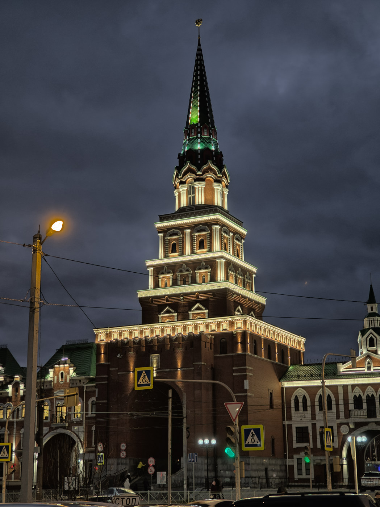
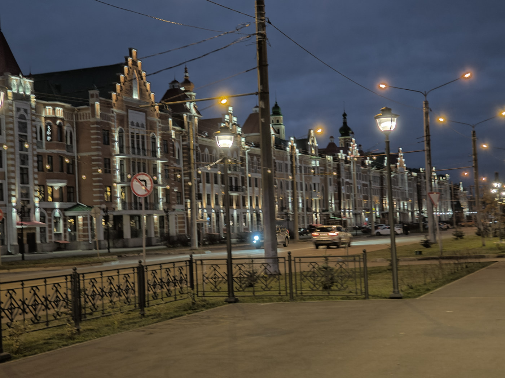
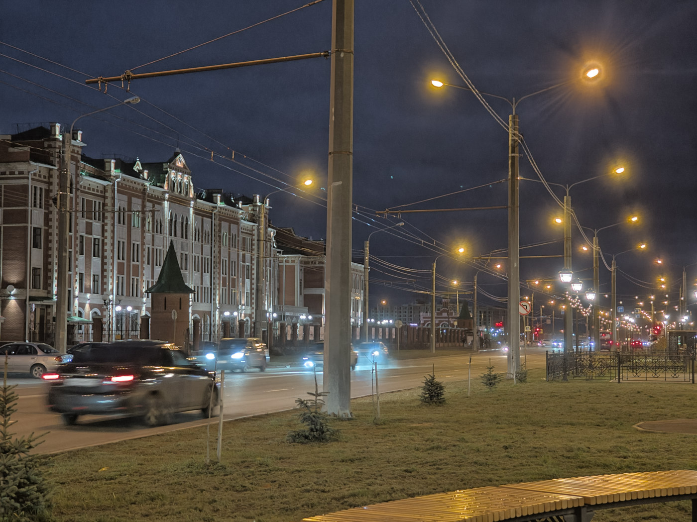

LightCraft Manual Editing Skill
AI 에이전트가 LightCraft 0.21.1에서 사진을 전부 수동으로 편집하도록 가르치는 스킬입니다. 명시적인 슬라이더 값, 실제 마스크 도형, 실제 포인터 제스처. Auto도, 마법도 없습니다.
소개
LightCraft는 내장 MCP 서버를 갖춘 오픈 소스 비파괴 RAW 현상 프로그램(Lightroom 대안)입니다. 이 저장소는 OpenCode / Claude Code / Codex용 바로 사용 가능한 스킬입니다.
~/.config/opencode/skills/lightcraft/
├── SKILL.md # 원칙, 작업 흐름, 도구 라우팅, 함정
├── references/ # 필요할 때 읽는 12개 매뉴얼
└── scripts/ # MCP 실행기, 앱 실행기, 문서 갱신, 애드온 목록
392개 명령, 114개 현상 슬라이더, 완전한 develop JSON 스키마, 모든 마스크 종류, 점 제거, Point Color, HDR, 브래킷 합성, 내보내기, 그리고 41개 내장 프리셋과 그 실제 수치 레시피를 다룹니다.
설치
git clone https://github.com/ildargiv/lightcraft-manual-skill.git \
~/.config/opencode/skills/lightcraft
에이전트를 재시작해 스킬을 다시 스캔하세요. 요구 사항: LightCraft 0.21.1 이상, Python 3(보조 스크립트에만 필요).
실행 중인 앱에 연결(권장)
MCP 서버는 자가 복구 래퍼를 통해 opencode.json에 등록합니다.
"lightcraft": {
"type": "local",
"command": ["python", "<skills>/lightcraft/scripts/mcp-connect.py"],
"enabled": true
}
mcp-connect.py는 필요하면 --control 7980으로 데스크톱 앱을 실행한 뒤 stdio를 lightcraft-cli mcp --compact --connect 127.0.0.1:7980에 넘깁니다. 에이전트는 모든 편집 도구와 실시간 UI 도구(screenshot, click, press_key, pointer_gesture, set_ui, clipboard)를 얻습니다.
수동 실행 방법:
powershell -ExecutionPolicy Bypass -File <skills>/lightcraft/scripts/start-lightcraft-app.ps1
우리의 장점
- 수동 편집은 바람이 아니라 규칙입니다.
develop.auto,develop.autoBwMix, Auto WB,crop.autoStraighten,geometry.upright auto,spot.findDust/findBlemishes,lensBlur.findSubject,preset.apply,develop.sync/autoSync,develop.matchExposure를 명시적으로 금지합니다. 금지마다 수동 대안(명시적 숫자와 좌표)을 제시합니다. - 프로그램 전체를 포괄. 매개변수가 있는 392개 명령, 범위/간격/기본값이 있는 114개 슬라이더, 완전한
develop스키마, 10가지 마스크 유형, 브러시, 구성 요소, 점, 적목 현상, Point Color, Lens Blur, 커브, HSL, 컬러 그레이딩, 광학, 지오메트리, 인쇄, 슬라이드쇼, 보관. - 모든 프리셋을 숫자까지 분해. 41개 내장 프리셋 각각의 실제 내용(어떤 필드를 어떤 값으로 설정하는지)을 내보냈습니다. 에이전트는 버튼을 누르는 대신 손으로 룩을 재현하고 사진에 맞게 조정할 수 있습니다. 포인트 커브 3종과 내보내기 프리셋 8종도 포함됩니다.
- HDR 처음부터 끝까지.
develop.hdr+maxEv+hdr.sdr*, 브래킷 합성(merge.hdr,hdrBatch, 파노라마), 게인 맵 JPEG 내보내기(ISO 21496-1), 10비트 PQ/HLG AVIF, 16비트 Rec.2020 PQ PNG/JXL, 32비트 float TIFF. ffprobe로 검증:rgb48be,smpte2084,bt2020. 미리보기는 항상 SDR이므로 에이전트는 보이지 않는 HDR을 노출로 "수정"하지 않습니다. - 실시간 UI와 실제 제스처. connect 모드는
screenshot,click,pointer_gesture,press_key를 제공합니다. 에이전트는 LightCraft 창에서 결과를 보고, 정규화된 이미지 좌표로 실제 제스처를 사용해 브러시나 그라데이션을 그릴 수 있습니다. - 자가 복구 MCP. 래퍼가 제어 포트와 함께 앱을 실행해
catalog.lock충돌(헤드리스 서버와 데스크톱 앱이 같은 라이브러리를 동시에 열 수 없는 문제)을 없앴습니다. - 스스로 갱신되는 문서.
scripts/refresh-reference.py가 설치된 버전에서 명령/슬라이더 목록과 모든 프리셋 레시피를 다시 생성하고 GitHub 최신 릴리스와 비교합니다. - 애드온 지식과 안전한 가져오기. 지원 형식(
.lcpreset, XMP,.lrtemplate,.cube,.dcp,.lceffect,.lccurve, SAM 3, denoise ONNX),dryRun가져오기 흐름, 서드파티 프로젝트에 대한 비판적 목록, 불법 복제 패키지 경고. - 실제 RAW로 검증. 아래 예제는 Xiaomi 13 Ultra DNG를 손으로 현상한 것이며, 각각 재현용 정확한
developJSON이 포함되어 있습니다. - 안전 장치. 실험은
photo.virtualCopy에서만, 테스트 내보내기는 temp로, 원본/XMP 덮어쓰기 거부, 메타데이터는 신뢰할 수 없는 데이터로 취급, 매 단계마다history.list/restore와edit.undo.
내용
| 파일 | 내용 |
|---|---|
SKILL.md | 수동 원칙, 편집 파이프라인, 도구, UI, 함정 |
references/controls.md | 모든 슬라이더: id, min, max, 기본값, 간격 |
references/develop-json.md | 필드 의미를 갖는 완전한 develop 스키마 |
references/masks-spots.md | 마스크 도형, 브러시, 구성 요소, 점, 적목, Point Color, Lens Blur |
references/hdr.md | HDR 편집, SDR 렌디션, 합성, 내보내기, 검증 |
references/presets.md | 41개 프리셋의 정확한 값, 커브, 내보내기 프리셋 |
references/manual-editing.md | 구체적 숫자가 있는 12가지 장르 레시피 |
references/export.md | 형식, 크기, 메타데이터, 워터마크, 컨택트 시트 |
references/commands-edit.md | 편집 명령과 전체 매개변수 |
references/commands-rest.md | 라이브러리, 메타데이터, 인쇄, 슬라이드쇼, 얼굴 |
references/library.md | 편집 외 기능 지도 |
references/addons.md | 애드온, 모델, 커뮤니티 프로젝트 |
scripts/* | MCP 실행기, 앱 실행기, 문서 갱신, 애드온 목록 |
Seven Xiaomi 13 Ultra RAW photos from one city shoot, developed by hand. No develop.auto, no preset.apply, no automatic straightening or subject detection. Each result comes with its exact settings JSON so you can reproduce it with lightcraft-cli render.
River HDR: headroom 3.5 EV, gradient sky mask, local tree mask


Flower shop at blue hour: manual 4200 K balance and split grading


Bell tower at blue hour: cool shadows, warm windows, shadow recovery


Old town at dusk: 4300 K by hand, architecture and street lights


Golden moose and city lights: controlled highlights, warm/cool grading


Night road with bokeh: 4000 K, noise control 25/30, light trails


Evening street: mixed lighting balanced manually, no Auto WB


All exports: metadata=none, 1400 px long edge, JPEG quality 88. The HDR example additionally writes an ISO 21496-1 gain map (hdrgm marker verified).
직접 확인하기
python scripts/addon-inventory.py
python scripts/refresh-reference.py
lightcraft-cli render examples/01-river-hdr/original.dng -o repro.jpg \
--settings examples/settings/01-river-hdr.json --size 1400 \
--opt metadata=none --opt quality=88 --opt hdr=true
한계
- LightCraft는 alpha(0.21.1)이며 공식 플러그인 API가 아직 없습니다 — "애드온"은 가져온 프리셋/프로필/모델과 외부 유틸리티를 뜻합니다.
- SAM 3는 포함되지 않습니다(약 3.4GB, Meta 라이선스). Object/Describe 마스크에 필요합니다. Sky/Subject/Background는 없어도 동작합니다.
- LightCraft는 화면에 HDR을 표시할 수 없습니다. 미리보기는 항상 SDR입니다. HDR은 내보낸 게인 맵 / PQ 파일로 판단하세요.
addons.md의 서드파티 저장소는 비공식이며 검증되지 않았습니다. 사용 전 코드와 라이선스를 확인하세요.
라이선스
MIT — LICENSE 참조. 스킬 텍스트와 스크립트는 원저작물입니다. LightCraft 자체는 ArtCraft 팀의 별도 프로젝트입니다(MIT OR Apache-2.0). 예제 DNG는작가의 소유이며 데모 목적으로만 포함되었습니다.
버튼을 누를 줄 알지만 손으로 작업하는 것을 더 좋아하는 에이전트를 위해.